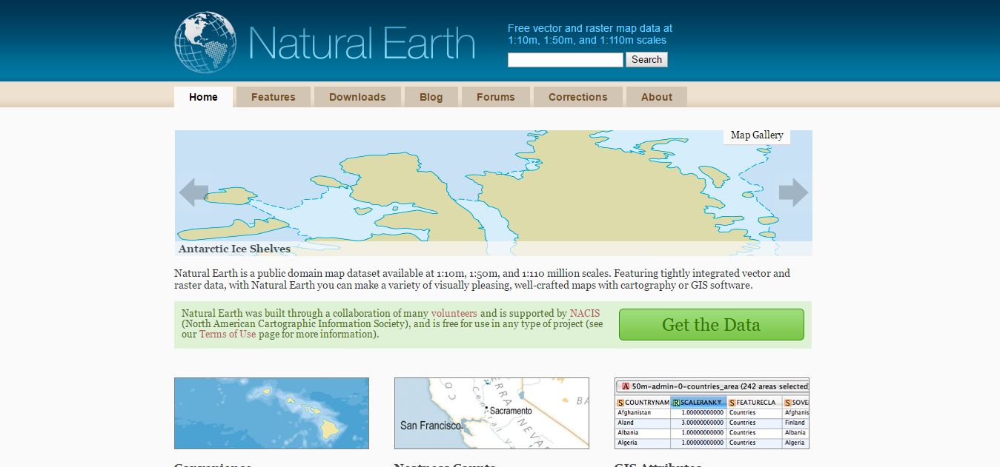

Have you ever wanted to have your own google maps?
from idea to tileserver

openstreetmap data to tileserver


Basics
- geo projection
- gejson format
- d3.js + leaflet
- tilenames
- geo formats, data
geo projections
mercator projection
srs code EPSG:3857
-
Scale is the same in all directions.
(A mile along a road should look the same length no matter which way the road is facing.) -
Angles are depicted accurately.
(If the map directs me to make what looks like a 90° left turn, or to bear right 30°, then that’s what I actually do.) A small real-life circle like the should be shown as a circle on the map, not squashed into an ellipse.
By convention, north should always point straight up.

geojson format
Point, LineString, Polygon, MultiPoint, MultiLineString, MultiPolygon
{
"type": "FeatureCollection",
"features": [{
"type": "Feature",
"geometry": {
"type": "Point",
"coordinates": [102.0, 0.5]
},
"properties": {
"prop0": "value0"
}
}, {
"type": "Feature",
"geometry": {
"type": "LineString",
"coordinates": [
[102.0, 0.0],
[103.0, 1.0],
[104.0, 0.0],
[105.0, 1.0]
]
},
"properties": {
"prop0": "value0",
"prop1": 0.0
}
}, {
"type": "Feature",
"geometry": {
"type": "Polygon",
"coordinates": [
[
[100.0, 0.0],
[101.0, 0.0],
[101.0, 1.0],
[100.0, 1.0],
[100.0, 0.0]
]
]
},
"properties": {
"prop0": "value0",
"prop1": {
"this": "that"
}
}
}]
}
how to get data?
github.com
naturalearthdata.com
geojson-maps.kyd.com.au
validate and explore your data
geojsonlint.com

geojson.io

First map
var width = 960,
height = 500;
var fill = d3.scale.log()
.domain([10, 500])
.range(["#fff", "#e67e22"]);
var path = d3.geo.path();
var svg = d3.select("#slide-d3-firstmap").append("svg")
.attr("width", width)
.attr("height", height);
d3.json("/assets/data/us-states.geo.json", function(error, geojson) {
if (error) throw error;
var projection = d3.geo.albersUsa()
.translate([width/2, height/2])
.scale([1000]);
var path = d3.geo.path()
.projection(projection);
var group = svg.append("g")
.selectAll('path')
.data(geojson.features)
.enter().append('path')
.attr('d', path)
.style("fill", function(d) {
return fill(path.area(d));
});
Adding a tooltip
[...]
var tooltip = d3.select("body")
.append("div")
.style("position", "absolute")
.style("z-index", "10")
.style("visibility", "hidden")
.attr("class", "tooltip")
.text("tooltip");
[...]
.on("mouseenter", function(d) {
tooltip.text(d.properties.name);
})
.on("mouseover", function() {
return tooltip.style("visibility", "visible");
})
.on("mousemove", function() {
return tooltip.style("top", (event.pageY - 10) + "px").style("left", (event.pageX + 10) + "px");
})
.on("mouseout", function() {
return tooltip.style("visibility", "hidden");
});
Use proper projection
var center = d3.geo.centroid(geojson);
var scale = 1000;
var offset = [width/2, height/2];
var projection = d3.geo.mercator().scale(scale).center(center)
.translate(offset);
var path = d3.geo.path().projection(projection);
var bounds = path.bounds(geojson);
var hscale = scale*width / (bounds[1][0] - bounds[0][0]);
var vscale = scale*height / (bounds[1][1] - bounds[0][1]);
scale = (hscale < vscale) ? hscale : vscale;
offset = [width - (bounds[0][0] + bounds[1][0])/2,
height - (bounds[0][1] + bounds[1][1])/2];
// new projection
projection = d3.geo.mercator().center(center)
.scale(scale).translate(offset);
path = path.projection(projection);
// adjust projection
bounds = path.bounds(geojson);
offset[0] = offset[0] + (width - bounds[1][0] - bounds[0][0]) / 2;
offset[1] = offset[1] + (height - bounds[1][1] - bounds[0][1]) / 2;
projection = d3.geo.mercator().center(center)
.scale(scale).translate(offset);
path = path.projection(projection);